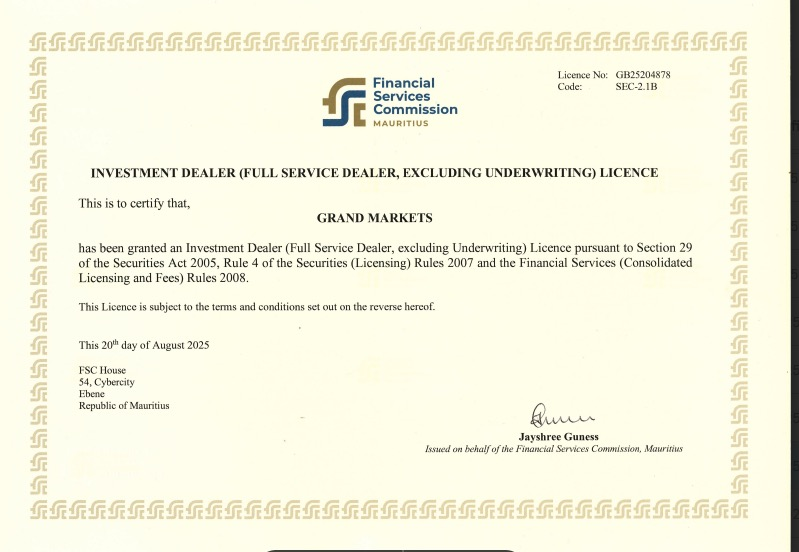

AFSL#554475 持牌背景
Professional Finance
澳洲金融从业 · RG146 备考中心
面向在澳留学生、新移民与金融从业者，建立从合规认知、科目规划到模拟测试的清晰备考路径。
3核心学习模块
题库模拟测试支持
Audience
适合人群
计划移民澳洲
从事金融行业，需要本地认可的专业资质。
在澳留学生
希望毕业后进入金融、理财顾问等行业。
金融从业者
需要满足 ASIC 合规要求，补考或晋升。
创业者
计划在澳申请金融牌照，需要 RG146 合规背景。
Courses
三大课程模块
RG146 是什么
详解澳洲金融服务监管科普：ASIC 监管要求、RG146 与 AFSL 的关系，以及完成相关培训后可理解的从业边界。帮你在备考前建立完整的合规认知框架。
必读入门
ASIC 法规
免费内容
了解详情 →
考试科目与备考路径
覆盖 Generic Knowledge 与 Specialist 两大模块，按目标岗位梳理学习周期规划。配套题库、模拟测试与考点精讲，帮助建立稳定备考节奏。
Generic Knowledge
Specialist
学习规划
了解详情 →
GMA 培训课程介绍
线上直播 + 1对1 辅导双轨制学习，灵活适配在职、留学等不同时区学员。课程结束后提供报名指引与持续学习支持。
线上直播
1对1辅导
报名入口
了解详情 →
RG146 是什么
RG146 是什么
模块一
RG146 定义
理解 RG146 的监管语境、学习范围与合规边界。
查看详情 → 模块二与 AFSL 的关系
区分机构牌照、授权关系与个人知识培训要求。
查看详情 → 模块三完成学习后能理解什么
了解相关岗位方向、服务边界与雇主授权要求。
查看详情 → 模块四为什么选择 GMA
在持牌机构背景下学习澳洲金融服务合规语境。
查看详情 →
加入社区了解更多 →
免费内容 · 无需付费
考试科目与备考路径
考试科目与备考路径
模块一
Generic Knowledge
金融服务行业基础知识，适用所有 RG146 学习者。
查看详情 → 模块二Specialist 模块
按目标方向选择专项主题，理解产品差异与合规边界。
查看详情 → 模块三学习周期规划
根据基础与目标安排学习时间表，建立可复盘节奏。
查看详情 → 模块四模拟测试与题库
配套章节练习、限时练习与错题复盘，帮助检查理解。
查看详情 →
立即咨询备考方案 →
GMA 讲师团队直接答疑
GMA 培训课程介绍
GMA 培训课程介绍
模块一
线上直播课
灵活时区安排，适配在职、留学等不同学员群体。
模块二
1 对 1 辅导
专属讲师跟进，针对薄弱环节定向强化。
模块三
报名流程
简单三步完成报名，GMA 导师确认课程细节。
模块四
结业认证
完成课程颁发 GMA 结业证书，助力求职背书。
立即报名 →
名额有限，先到先得
ASIC & AFSL
澳洲金融监管与 AFSL 牌照说明
ASIC（Australian Securities and Investments Commission）即澳大利亚证券与投资委员会，是澳大利亚金融服务行业监管机构，对金融服务业务进行许可和监管。
GM 澳洲总部持有 ASIC 颁发的 AFSL #554475 做市商牌照。该信息适合放在金融从业页，用于帮助学习者理解澳洲金融服务监管语境、持牌主体、合规边界与职业表达。
